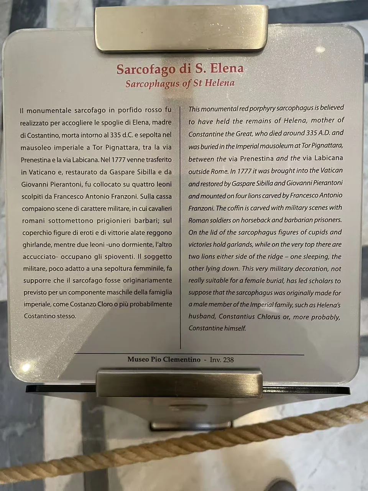

ROMAN SARCOPHAGI / R12
圣海伦娜紫斑岩石棺
深紫红的石面上，骑兵悬在俘虏上方；战争的上下关系变得格外清楚。

- 年代
- 4世纪前期
- 材料
- 红色紫斑岩
- 收藏
- 梵蒂冈博物馆
- 观看地点
- 梵蒂冈博物馆 · 梵蒂冈城
- 馆内位置
- 庇护克莱孟馆 · 希腊十字厅
- 馆藏号
- 238（现场展牌）
重量与秩序
与密集缠绕的战争石棺不同，这件紫斑岩石棺给每个人物留出较大的间隔。马腿抬起，俘虏在下面站立或屈身，凸出的身体从深色背景中分离出来。厚重棺体与屋顶式棺盖，使这些军事形象显得既醒目又有秩序。 [17]
传统归属与后来的修复
梵蒂冈将它传统上联系到君士坦丁之母海伦娜，又介绍学者因军事题材而提出的男性帝室成员原委托假说。石棺1777年移入梵蒂冈并接受修复，如今托起它的狮子底座由Franzoni制作。墓葬归属与现今陈列的形成，是两段不同的历史。 [17]
现场展签 · 1张

资料与来源
断代、收藏与文献说明
为哪位帝室成员最初制作，目前仍有不同推测。 [17]